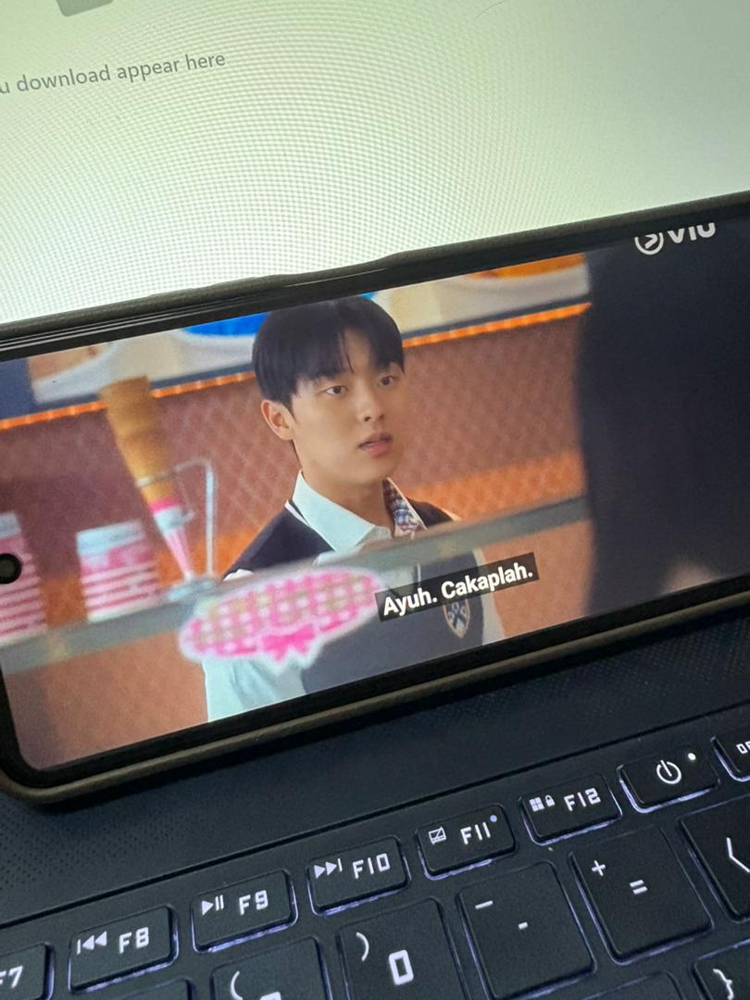
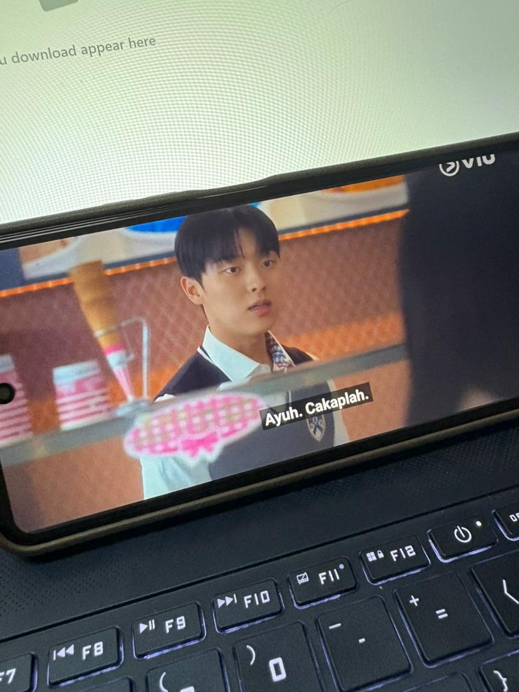

Sep 25 2023 | 15+ | 16 Episodes | Language : Korean
Directed by:Jung Ji-hyun
Starring: Ryeoun, Choi Hyun-wook, Seol In-ah, and Shin Eun-soo.
winkling Watermelon tells the story of a coda boy with a natural talent for music, who fights with his father to pursue his dream of becoming a guitarist in a band. After the fight, he travels back in time to 1995. He joins a band with his childhood father and forms a band called Watermelon Sugar with the suspicious youths he meets there, and communicates with them through music.
 
